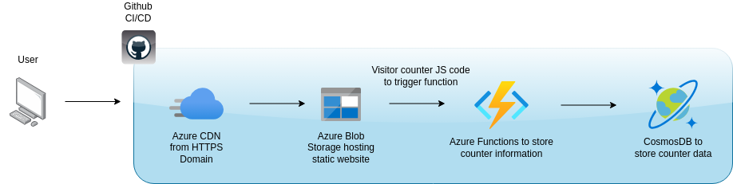

Azure Website
www.resync-init.dev
This website was created and is hosted on Azure using multiple services.
Azure Services :
- Azure CDN for increased performace by providing content to the users faster. Learn More Azure CDN
- Azure Blob Storage to host statc website contents. Learn More about Blob Storage
- Azure Functions to provide and Https trigger to store site counter. Learn more about Azure Functions
- CosmosDB to store counter data which will be called via the API Learn more about CosmosDB
- Github for CI/CD intergration. Learn more about Github CI/CD
Thoughts :
This is an amazing project to begin with for people starting
to get into cloud technologies. I would highly reccomend
following this tutorial from ACG.
Azure Website
Since the video is over 2 years old, there are a few things that'll youll have to research and troubleshoot as It's not going to be a straight forward on some parts. This is a good thing as it will teach you how to debug and search for solutions.